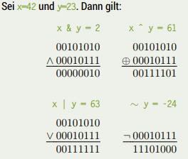
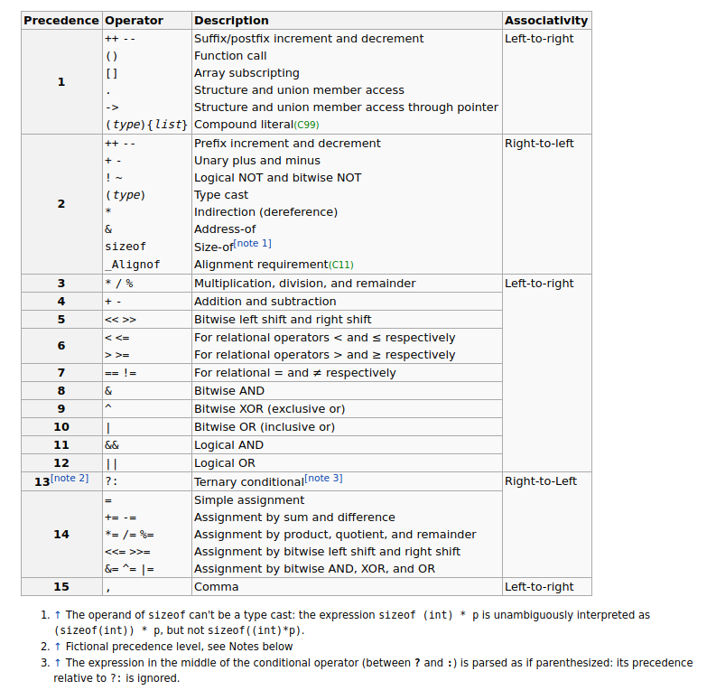
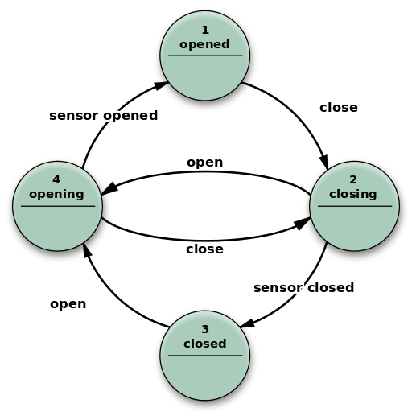
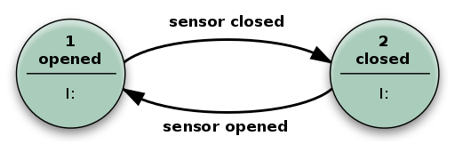

Bit Operators
In this lecture we started by covering bit operators. I've also written about those here. To keep it short (look at the link for more detailed explainations):
-
&bitwise and -
|bitwise or -
~bitwise not -
^bitwise xor

Then there are the bitshift operators as well:
-
8 << nleftshift which is like multiplication with 2n -
8 >> nrightshift which is like division with 2n
There are more operators in C. Some of them offer a shorter/more concise notation. The lecturer calls them "Faulheitsoperatoren" (lazy operators) I don't like that term because it can get mixed with "lazy evaluation" (which is called short circuit evaluatoin to be precise) rather easily. So I'll now just go over the operators we covered in the lecture next.
Comma Operator
The wikipedia page on this operator is very well written, I have copied the valuable information to here:
In the C and C++ programming languages, the comma operator (represented by the token ,) is a binary operator that evaluates its first operand and discards the result, and then evaluates the second operand and returns this value (and type).
The use of the comma token as an operator is distinct from its use in function calls and definitions, variable declarations, enum declarations, and similar constructs, where it acts as a separator.
The comma operator separates expressions (which have value) in a way analogous to how the semicolon terminates statements, and sequences of expressions are enclosed in parentheses analogously to how sequences of statements are enclosed in braces: (a, b, c) is a sequence of expressions, separated by commas, which evaluates to the last expression c while {a; b; c;} is a sequence of statements, and does not evaluate to any value. A comma can only occur between two expressions – commas separate expressions – unlike the semicolon, which occurs at the end of a (non-block) statement – semicolons terminate statements.
The comma operator has the lowest precedence of any C operator, and acts as a sequence point. In a combination of commas and semicolons, semicolons have lower precedence than commas, as semicolons separate statements but commas occur within statements, which accords with their use as ordinary punctuation: a, b; c, d is grouped as (a, b); (c, d) because these are two separate statements.
/**
* Commas act as separators in this line, not as an operator.
* Results: a=1, b=2, c=3, i=0
*/
int a=1, b=2, c=3, i=0;
/**
* Assigns value of b into i.
* Results: a=1, b=2, c=3, i=2
*/
int a=1, b=2, c=3;
int i = (a, b); // parens are required here because '=' has higher precedence than ',' it would get treated as (int i = a), (int b); without the parens which would be a redeclaration of b with no linkage
/**
* Assigns value of a into i. Equivalent to (i = a), b;
* Results: a=1, b=2, c=3, i=1
* (The curly braces on the second line are needed to
* avoid a compiler error. The second 'b' declared
* is given no initial value.)
*/
int a=1, b=2, c=3;
{ int i = a, b; }
/**
* Increases value of a by 2, then assigns value of resulting operation a+b into i .
* Results: a=3, b=2, c=3, i=5
*/
int a=1, b=2, c=3;
int i = (a += 2, a + b);
/**
* Increases value of a by 2, then stores value of a to i, and discards unused
* values of resulting operation a + b . Equivalent to (i = (a += 2)), a + b;
* Results: a=3, b=2, c=3, i=3
*/
int a=1, b=2, c=3;
int i;
i = a += 2, a + b;
/**
* Assigns value of a into i; the following 'b' and 'c'
* are not part of the initializer but declarators for
* second instances of those variables.
* Results: a=1, b=2, c=3, i=1
* (The curly braces on the second line are needed to
* avoid a compiler error. The second 'b' and second
* 'c' declared are given no initial value.)
*/
int a=1, b=2, c=3;
{ int i = a, b, c; }
/**
* Assigns value of c into i, discarding the unused a and b values.
* Results: a=1, b=2, c=3, i=3
*/
int a=1, b=2, c=3;
int i = (a, b, c);
/**
* Returns 6, not 4, since comma operator sequence points following the keyword
* 'return' are considered a single expression evaluating to rvalue of final
* subexpression c=6 .
*/
return a=4, b=5, c=6;
/**
* Returns 3, not 1, for same reason as previous example, that is return expressions must be fully evaluated before the function can return.
*/
return 1, 2, 3;
/**
* Returns 3, not 1, still for same reason as above. This example works as it does
* because return is a keyword, not a function call. Even though compilers will
* allow for the construct return(value), the parentheses are only relative to "value"
* and have no special effect on the return keyword.
* Return simply gets an expression and here the expression is "(1), 2, 3".
*/
return(1), 2, 3;
Use cases: The comma operator has relatively limited use cases. Because it discards its first operand, it is generally only useful where the first operand has desirable side effects. Further, because it is rarely used outside of specific idioms, and easily mistaken with other commas or the semicolon, it is potentially confusing and error-prone. Nevertheless, there are certain circumstances where it is commonly used, notably in for loops and in SFINAE. For embedded systems which may have limited debugging capabilities, the comma operator can be used in combination with a macro to seamlessly override a function call, to insert code just before the function call.
For Loops:
The most common use is to allow multiple assignment statements without using a block statement, primarily in the initialization and the increment expressions of a for loop. This is the only idiomatic use in elementary C programming. In the following example, the order of the loop's initializers is significant:
// reverse print char array
void rev(char *s, size_t len)
{
char *first;
for (first = s, s += len; s > first; --s) {
putchar(*s);
}
}
Outside of for loop initializers (which have a special use of semicolons), the comma might be used synonymously with the semicolon, particularly when the statements in question function similarly to a loop increment (e.g. at the end of a while loop):
++p, ++q;
++p; ++q; // Two statements on one line
However, as this usage achieves the same thing as the semicolon in a visually different way, this is of dubious usefulness and might confuse readers.
Condition:
The comma can be used within a condition (of an if, while, do while, or for) to allow auxiliary computations, particularly calling a function and using the result, with block scoping:
if (y = f(x), y > x) {
... // statements involving x and y
}
Complex return: The comma can be used in return statements, to assign to a global variable or out parameter (passed by reference). This idiom suggests that the assignments are part of the return, rather than auxiliary assignments in a block that terminates with the actual return. For example, in setting a global error number:
if (failure)
return (errno = EINVAL, -1);
This can be written more verbosely as:
if (failure) {
errno = EINVAL;
return -1;
}
Avoid a block: For brevity, the comma can be used to avoid a block and associated braces, as in:
if (x == 1) y = 2, z = 3;
if (x == 1)
y = 2, z = 3;
instead of:
if (x == 1) {y = 2; z = 3;}
if (x == 1) {
y = 2; z = 3;
}
Increment and Decrement Operator
Next up are ++ increment and -- decrement operators which are unary operators that add or subtract one, to or from their operand. C like languages offer two versions (pre and post) of each operator with slighltly different semantics. Now guess what I've also written a bit about them here xD but that was a bit superficial so we'll repeat now.
The increment operator increases, and the decrement operator decreases, the value of its operand by 1. The operand must have an arithmetic or pointer data type, and must refer to a modifiable data object. Pointers values are increased (or decreased) by an amount that makes them point to the next (or previous) element adjacent in memory → so eg incrementing a pointer via ++ will increment it to point to the next element which would really be an incrementation of 8 when the base handled base type is a char for example.
The pre-increment and pre-decrement operators increment (or decrement) their operand by 1, and the value of the expression is the resulting incremented (or decremented) value.
The post-increment and post-decrement operators increase (or decrease) the value of their operand by 1, but the value of the expression is the operand's original value prior to the increment (or decrement) operation.
Since the increment/decrement operator modifies its operand, use of such an operand more than once within the same expression can produce undefined results. For example, in expressions such as x - ++x, it is not clear in what sequence the subtraction and increment operations should be performed. Such expressions generally invoke undefined behavior, and should be avoided.
This example visualizes the difference between the post and prefix operators:
int x;
int y;
// Increment operators
x = 1;
y = ++x; // x is now 2, y is also 2
y = x++; // x is now 3, y is 2
// Decrement operators
x = 3;
y = x--; // x is now 2, y is 3
y = --x; // x is now 1, y is also 1
If these shorthand operators are just used for their side effect (which is de-/in-crementing the variable for example in the third for loop statement) then it does not matter which variant post or pre is used.
Easy peazy my friend :D
Compound Assignment Operators
The next type of operators we cover are called compound assignment operators ('Selbstzuweisungsoperatoren' in script). The following table visualizes their effects:
| Operator name | Syntax | Meaning |
|---|---|---|
| Addition assignment | a += b |
a = a + b |
| Subtraction assignment | a -= b |
a = a - b |
| Multiplication assignment | a *= b |
a = a * b |
| Division assignment | a /= b |
a = a / b |
| Modulo assignment | a %= b |
a = a % b |
| Bitwise AND assignment | a &= b |
a = a & b |
| Bitwise OR assignment | a ❘= b |
a = a ❘ b |
| Bitwise XOR assignment | a ^= b |
a = a ^ b |
| Bitwise leftshift assignment | a <<= b |
a = a << b |
| Bitwise rightshift assignment | a >>= b |
a = a >> b |
Be careful, while += and -= are somewhat common to see, the others might be confusing and it is okay to not use them as much.
Operator Precedence and Associativity
When multiple operators are used in an expression, the evaluation order depends on the precedence and / associativity/ of the operators.
The order of operations (or operator precedence) is a collection of rules that reflect conventions about which procedures to perform first in order to evaluate a given mathematical expression.
For example, in mathematics and most computer languages, multiplication is granted a higher precedence than addition, and it has been this way since the introduction of modern algebraic notation. Thus, the expression 2 + 3 × 4 is interpreted to have the value 2 + (3 × 4) = 14
Skript: Operatoren mit höherer Priorität werden zuerst ausgewertet
The associativity of an operator is a property that determines how operators of the same precedence are grouped in the absence of parentheses. If an operand is both preceded and followed by operators, and those operators have equal precedence, then the operand may be used as input to two different operations (i.e. the two operations indicated by the two operators). The choice of which operations to apply the operand to, is determined by the "associativity" of the operators.
Operators may be associative (meaning the operations can be grouped arbitrarily), left-associative (meaning the operations are grouped from the left), right-associative (meaning the operations are grouped from the right) or non-associative (meaning operations cannot be chained, often because the output type is incompatible with the input types).
The associativity and precedence of an operator is a part of the definition of the programming language; different programming languages may have different associativity and precedence for the same type of operator.
Consider the expression a ~ b ~ c. If the operator ~ has left associativity, this expression would be interpreted as (a ~ b) ~ c. If the operator has right associativity, the expression would be interpreted as a ~ (b ~ c). If the operator is non-associative, the expression might be a syntax error, or it might have some special meaning.
Some mathematical operators have inherent associativity. For example, subtraction and division, as used in conventional math notation, are inherently left-associative. Addition and multiplication, by contrast, are both left and right associative eg (a * b) * c = a * (b * c)).
Skript: Assoziativität bestimmt die Richtung der Auswertung
Wiki C Precedence / Associativity Table
Table and notes below from cppreference.com

When parsing an expression, an operator which is listed on some row will be bound tighter (as if by parentheses) to its arguments than any operator that is listed on a row further below it. For example, the expression *p++ is parsed as *(p++), and not as (*p)++.
Operators that are in the same cell (there may be several rows of operators listed in a cell) are evaluated with the same precedence, in the given direction. For example, the expression a=b=c is parsed as a=(b=c), and not as (a=b)=c because of right-to-left associativity.
Precedence and associativity are independent from order of evaluation.
The C language standard doesn't specify operator precedence. It specifies the language grammar, and the precedence table is derived from it to simplify understanding. There is a part of the grammar that cannot be represented by a precedence table: an assignment-expression is not allowed as the right hand operand of a conditional operator, so e = a < d ? a++ : a = d is an expression that cannot be parsed, and therefore relative precedence of conditional and assignment operators cannot be described easily.
However, many C compilers use non-standard expression grammar where ?: is designated higher precedence than =, which parses that expression as e = ( ((a < d) ? (a++) : a) = d ), which then fails to compile due to semantic constraints: ?: is never lvalue and = requires a modifiable lvalue on the left. This is the table presented on this page.
Note that this is different in C++, where the conditional operator has the same precedence as assignment.
Associativity specification is redundant for unary operators and is only shown for completeness: unary prefix operators always associate right-to-left eg sizeof ++*p is
sizeof(++(*p)) and unary postfix operators always associate left-to-right
eg a[1][2]++ is ((a[1])[2])++
Note that the associativity is meaningful for member access operators, even though they are grouped with unary postfix operators: a.b++ is parsed (a.b)++ and not a.(b++).
Remeber when in doubt use parentheses as it improves readability as well!
Abstract Machines (Automaten)
The next part of the chapter dealt with abstract machines. The slides are hard to convert to a blog format and it did not seem to be important for the course so I'll just skip over some stuff here. You should still take a look here (lecture slides 06: slide 40).
A finite-state machine (FSM) or finite-state automaton (FSA, plural: automata), finite automaton, or simply a state machine, is a mathematical model of computation. It is an abstract machine that can be in exactly one of a finite number of states at any given time. The FSM can change from one state to another in response to some external inputs; the change from one state to another is called a transition. An FSM is defined by a list of its states, its initial state, and the conditions for each transition. Finite state machines are of two types – deterministic finite state machines and non-deterministic finite state machines. A deterministic finite-state machine can be constructed equivalent to any non-deterministic one.
Slides: Ein endlicher (deterministischer) Automat (EA, Zustandsmaschine, finite state machine ➡ FSM, auch: finite state automata) ist ein Modell zur Beschreibung von Abläufen (z.B. in Computern). Ein EA besteht aus einer Menge von Zuständen S (states) und Zustandsübergängen T : S × Γ → S (Transitionen, transitions). Ein EA startet in einem Startzustand. Er „verarbeitet“ eine Sequenz von Zeichen oder Ereignissen Γ. Dabei bestimmt das nächste Zeichen/Ereignis, in welchen Zustand der EA wechselt. Ein EA kann einen oder mehrere Endzustände (accepting states) besitzen. Wird ein solcher Zustand erreicht, ist die Abarbeitung beendet.
Transitions (Zustandsveränderungen) in a state machine (endlichem Automaten) can lead to actions or output. Transducers (Transduktor, ein spezieller endlicher Automat der im Ggsatz zu einem Akzeptor eine Ausgabe erzeugt, überführt/übersetzt eine Quellsprache in eine Zielsprache) generate output based on a given input and/or a state using actions. They are used for control applications and in the field of computational linguistics.
In control applications, two types are distinguished:
Moore machine:
The FSM uses only entry actions, i.e., output depends only on the state. The advantage of the Moore model is a simplification of the behaviour. Consider an elevator door. The state machine recognizes two commands: "commandopen" and "commandclose", which trigger state changes. The entry action (E:) in state "Opening" starts a motor opening the door, the entry action in state "Closing" starts a motor in the other direction closing the door. States "Opened" and "Closed" stop the motor when fully opened or closed. They signal to the outside world (e.g., to other state machines) the situation: "door is open" or "door is closed". Slides: Aktion/Ausgabe ist an die Ankunft in einem bestimmten Zustand gebunden

Mealy machine:
The FSM also uses input actions, i.e., output depends on input and state. The use of a Mealy FSM leads often to a reduction of the number of states. The example in the picture below shows a Mealy FSM implementing the same behaviour as in the Moore example (the behaviour depends on the implemented FSM execution model and will work, e.g., for virtual FSM but not for event-driven FSM). There are two input actions (I:): "start motor to close the door if commandclose arrives" and "start motor in the other direction to open the door if commandopen arrives". The "opening" and "closing" intermediate states are not shown. Slides: Aktion/Ausgabe ist an einen bestimmten Übergang gebunden

Finite state machines are closely related to regular grammars because to every regular grammar there exists at least one FSM which accepts all expressions of that language (slides: Jede Folge von zulässigen Eingabesymbolen bzw. -ereignissen, die in einen Endzustand führen, entspricht einer formalen Sprache, die durch eine reguläre Grammatik beschrieben werden kann).
However a FSM is not sufficient for context free languages.